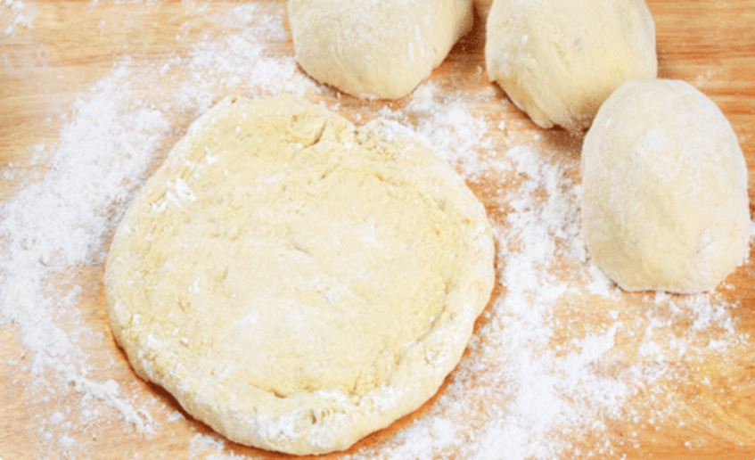
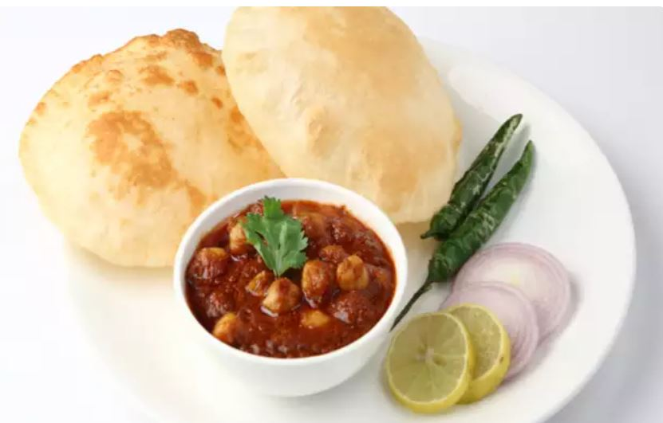

Meanwhile, put a pan on medium flame and heat a little oil in it. Add the cumin seeds and
sliced onion to the pan. Saute the onion till golden brown, then add minced garlic, ginger and onion paste.
Saute the ingredients
for a few seconds until the raw smell of garlic goes away and then
add tomato puree
Step 3 Add spices and cook the chole
Once the oil is separated, add turmeric, red chilli powder, coriander powder and chana
masala. Cook the tomato-onion mixture for another two minutes, and then add cooked chole with little water.
Stir well to mix the masala with the chole or the chickpeas. Check salt and allow it to cook for a few
minutes.
The chola is done! You can garnish with chopped onion and coriander leaves

Step 4 Prepare the dough
Now for making the bhaturas, combine together all-purpose flour or maida and wheat
flour or atta in a dough kneading plate. Then add salt and oil to it. Mix well. Add yoghurt to the flour
mixture and knead the dough well. You can add a little water and knead the dough.
When it is done, cover the dough with a kitchen towel and allow it to rise.

Step 5 Cook the bhatura and serve
Now, put a kadhai on high flame and meanwhile, take equal quantities of the dough and
roll big size puris (bhatura). When the oil is hot enough, carefully add these bhaturas to the oil and
deep fry. Repeat with the rest of the dough.
Then take a plate and serve Chola bhatura hot!

Tips
- To make the bhatura soft you can add some ghee, this will make your bhatura delicious.
- You can add some amchur powder to the chole, to give it a spicy-tangy touch.
- To make the dish more enticing you can dry roast the spices and then add them to the dish.
- Add a bit of soda to give a nice texture to the Bhature and to make them puff up perfectly, make sure
that the oil is super-hot.